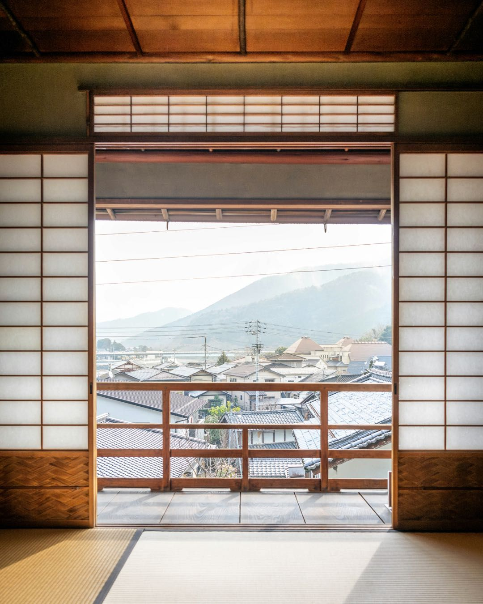
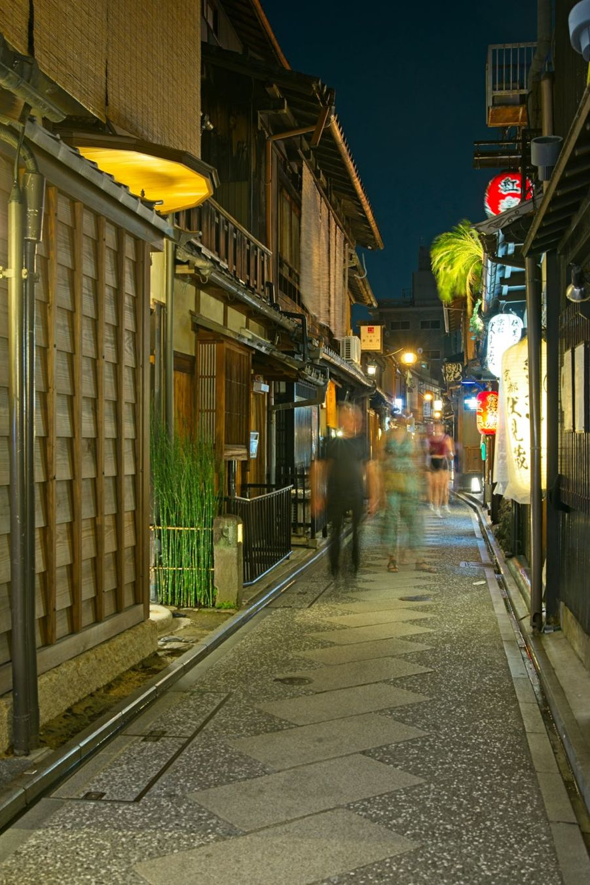
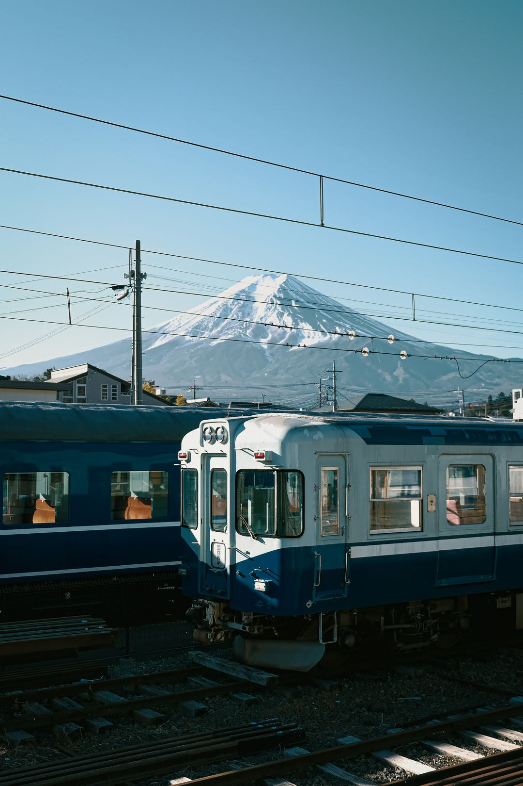
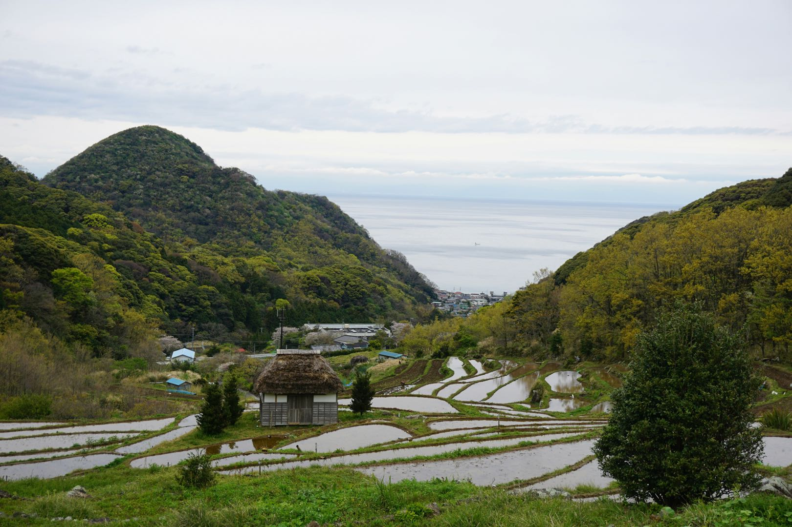
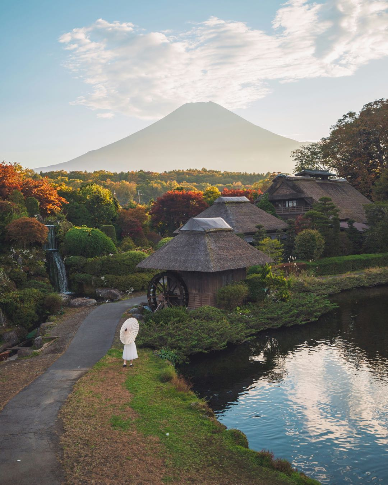
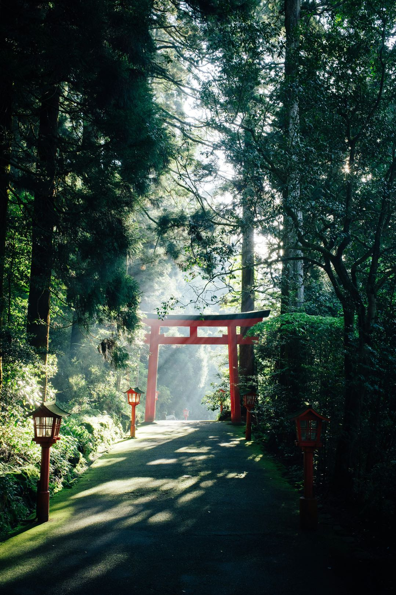
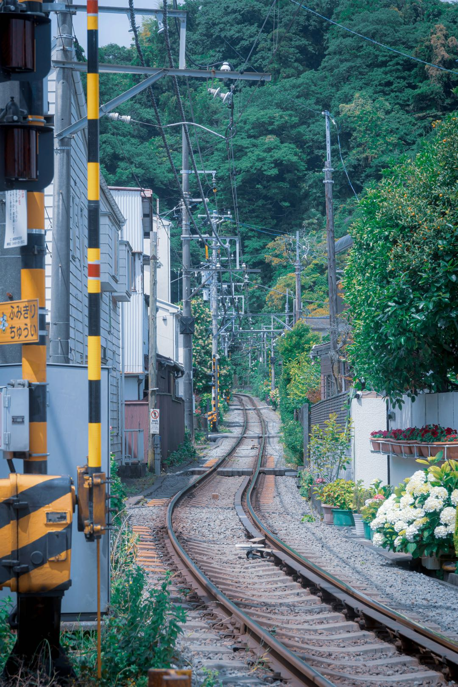
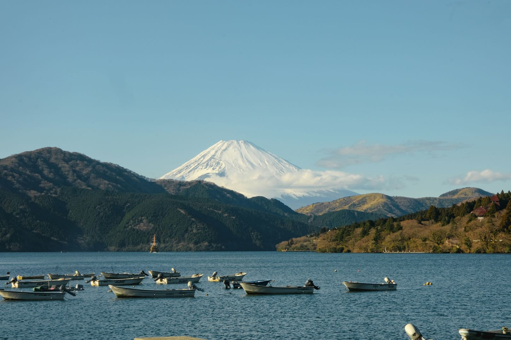

Trend
観光と地域
訪日客の
はじめての方は、ガイドから
空き家を活かしたい方へ
観光と
 観光と地域
観光と地域
観光と地域の記事

観光と地域
観光と地域
「暮らすように
「暮らすように旅する」長期滞在が広がる理由｜ワーケーション・二地域居住と小さな宿の可能性

観光と地域
観光と地域
宿が地域に
宿が地域にお金を落とす仕組み｜旅行者の消費が地域経済に広がる「経済循環」とは

観光と地域
観光と地域
訪日客を
訪日客を地方へ｜インバウンドの地方分散が進む背景と、地方の小さな宿のチャンス

観光と地域
観光と地域
観光業の
観光業の人手不足をどう乗り越える？宿泊業の採用と、地域で人を育てる仕組み

お金・税金
お金・税金
宿泊税とは？
宿泊税とは？導入する自治体が広がる背景と、宿の運営者が知っておくべきこと

観光と地域
観光と地域
「関係
「関係人口」とは？地域と継続的に関わる人を増やすために、宿ができること

物件・改修
物件・改修
静岡市・焼津の
静岡市・焼津の空き家は宿になる？｜有名観光地でなくても収益物件になり得る理由と見極め方

観光と地域
観光と地域
データで
データで見る日本の観光市場｜インバウンド拡大の裏で地方が抱える5つの課題
観光と地域
観光と地域
空き家活用は
空き家活用はなぜ地方創生につながるのか？宿泊施設への再生が地域にもたらす4つの循環
このカテゴリの
Consultation
空き家のこと、
まずは気軽にご相談ください。
まずは
- 相談・
お見積りは無料 - 全国対応・オンライン可
- しつこい
営業は しません